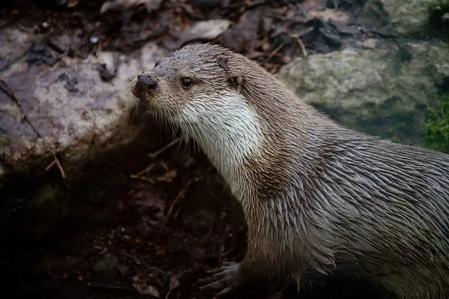

哺乳动物 · 动物界
水獭 Lutra lutra

半水生的鼬科动物，流线型身体与防水皮毛适合潜水捕鱼，会用石头敲开贝壳，对水质变化十分敏感。
- 分类
- 门脊索动物门纲哺乳纲目食肉目科鼬科属水獭属
- 栖息环境
- 河流、湖泊、沼泽与海岸，偏好水质清澈、鱼源丰富的环境
- 地理分布
- 欧亚大陆与北非的淡水及近岸海域，中国南北多地有分布
- 保护级别
- IUCN 近危（NT）；中国国家二级保护动物
物种志
水獭体长 0.57–0.7 米，尾长 0.35–0.4 米，体重 7–12 kg。它的身体细长流线，头部扁平，耳小、鼻孔可闭合；四肢短而强壮，趾间有蹼，尾粗壮呈锥形，利用摆动推进游泳；被毛由致密底绒和光亮针毛构成，防水保温。
水獭分布于欧亚大陆和北非的河流、湖泊、沼泽与海岸，偏好水质清澈、鱼源丰富的水域，主食鱼类，也捕食蛙、甲壳类、水鸟和小型兽类。它多在晨昏和夜间单独活动，潜水可持续数十秒，能闭气在水下追捕猎物；部分个体有把石块当工具敲开贝壳的行为。水獭会在岸边泥坡上反复滑行，形成“滑梯”般的痕迹，并通过粪便和肛腺分泌物标记领地。雌獭妊娠期约 60–70 天，每胎 1–4 仔。水体污染、栖息地破坏和毛皮贸易曾使其在欧洲多地消失，如今部分种群正在恢复。
形态与习性
- 食性以鱼类为主，也吃蛙、甲壳类、水鸟和小型兽类
- 体长0.57–0.7 m，尾长 0.35–0.4 m
- 体重7–12 kg
- 寿命野外约 10–12 年
- 繁殖妊娠期约 60–70 天，每胎 1–4 仔
- 潜水可持续数十秒，鼻孔和耳孔可闭合
- 活动节律晨昏和夜间单独活动
趣味知识
- 水獭的皮毛由致密底绒和针毛构成，潜水后依然保持干爽保温。
- 部分水獭会把石块当工具，敲开贝壳取食里面的肉。
- 它们爱在岸边泥坡上反复滑行，留下光滑的“滑梯”痕迹。
- 水獭对水质变化很敏感，常被当作淡水生态的指示物种。